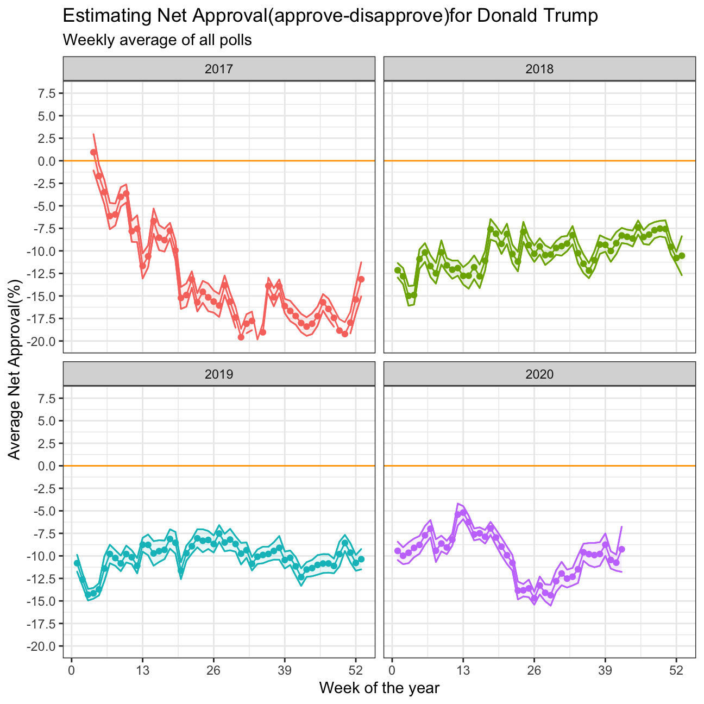
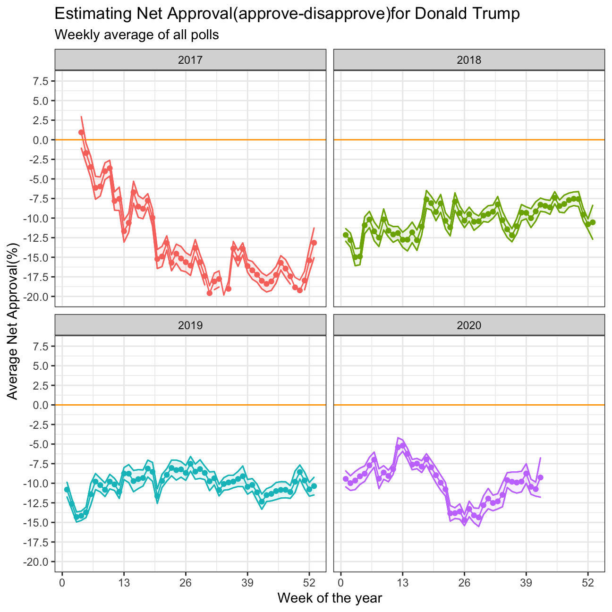
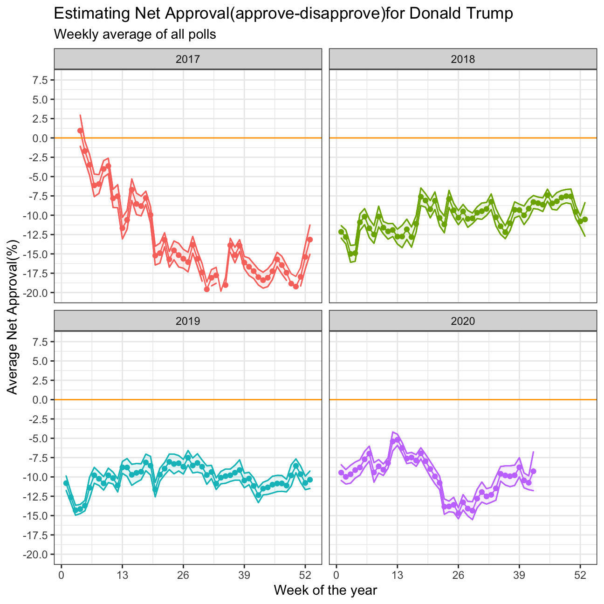

approval_polllist <- read_csv('https://projects.fivethirtyeight.com/trump-approval-data/approval_polllist.csv')
glimpse(approval_polllist)## Rows: 15,851
## Columns: 22
## $ president <chr> "Donald Trump", "Donald Trump", "Donald Trump",...
## $ subgroup <chr> "All polls", "All polls", "All polls", "All pol...
## $ modeldate <chr> "10/20/2020", "10/20/2020", "10/20/2020", "10/2...
## $ startdate <chr> "1/20/2017", "1/20/2017", "1/21/2017", "1/20/20...
## $ enddate <chr> "1/22/2017", "1/22/2017", "1/23/2017", "1/24/20...
## $ pollster <chr> "Morning Consult", "Gallup", "Gallup", "Ipsos",...
## $ grade <chr> "B/C", "B", "B", "B-", "B+", "B", "C+", "B-", "...
## $ samplesize <dbl> 1992, 1500, 1500, 1632, 1190, 1500, 1500, 1651,...
## $ population <chr> "rv", "a", "a", "a", "rv", "a", "lv", "a", "a",...
## $ weight <dbl> 0.680, 0.262, 0.243, 0.153, 1.514, 0.227, 0.200...
## $ influence <dbl> 0, 0, 0, 0, 0, 0, 0, 0, 0, 0, 0, 0, 0, 0, 0, 0,...
## $ approve <dbl> 46.0, 45.0, 45.0, 42.1, 36.0, 46.0, 57.0, 42.3,...
## $ disapprove <dbl> 37.0, 45.0, 46.0, 45.2, 44.0, 45.0, 43.0, 45.8,...
## $ adjusted_approve <dbl> 45.5, 45.8, 45.8, 43.3, 37.7, 46.8, 51.6, 43.5,...
## $ adjusted_disapprove <dbl> 38.2, 43.6, 44.6, 43.9, 42.8, 43.6, 44.5, 44.5,...
## $ multiversions <chr> NA, NA, NA, NA, NA, NA, NA, NA, NA, NA, NA, NA,...
## $ tracking <lgl> NA, TRUE, TRUE, TRUE, NA, TRUE, TRUE, TRUE, NA,...
## $ url <chr> "http://static.politico.com/9b/13/82a3baf542ae9...
## $ poll_id <dbl> 49249, 49253, 49262, 49426, 49260, 49236, 49266...
## $ question_id <dbl> 77261, 77265, 77274, 77599, 77272, 77248, 77278...
## $ createddate <chr> "1/23/2017", "1/23/2017", "1/24/2017", "3/1/201...
## $ timestamp <chr> "07:34:31 20 Oct 2020", "07:34:31 20 Oct 2020",...approval_polllist<- approval_polllist%>%
mutate(modeldate=mdy(modeldate),startdate=mdy(startdate),enddate=mdy(enddate),createddate=mdy(createddate),timestamp=mdy_hms("09-27-2020 00:45:20"))
glimpse(approval_polllist)## Rows: 15,851
## Columns: 22
## $ president <chr> "Donald Trump", "Donald Trump", "Donald Trump",...
## $ subgroup <chr> "All polls", "All polls", "All polls", "All pol...
## $ modeldate <date> 2020-10-20, 2020-10-20, 2020-10-20, 2020-10-20...
## $ startdate <date> 2017-01-20, 2017-01-20, 2017-01-21, 2017-01-20...
## $ enddate <date> 2017-01-22, 2017-01-22, 2017-01-23, 2017-01-24...
## $ pollster <chr> "Morning Consult", "Gallup", "Gallup", "Ipsos",...
## $ grade <chr> "B/C", "B", "B", "B-", "B+", "B", "C+", "B-", "...
## $ samplesize <dbl> 1992, 1500, 1500, 1632, 1190, 1500, 1500, 1651,...
## $ population <chr> "rv", "a", "a", "a", "rv", "a", "lv", "a", "a",...
## $ weight <dbl> 0.680, 0.262, 0.243, 0.153, 1.514, 0.227, 0.200...
## $ influence <dbl> 0, 0, 0, 0, 0, 0, 0, 0, 0, 0, 0, 0, 0, 0, 0, 0,...
## $ approve <dbl> 46.0, 45.0, 45.0, 42.1, 36.0, 46.0, 57.0, 42.3,...
## $ disapprove <dbl> 37.0, 45.0, 46.0, 45.2, 44.0, 45.0, 43.0, 45.8,...
## $ adjusted_approve <dbl> 45.5, 45.8, 45.8, 43.3, 37.7, 46.8, 51.6, 43.5,...
## $ adjusted_disapprove <dbl> 38.2, 43.6, 44.6, 43.9, 42.8, 43.6, 44.5, 44.5,...
## $ multiversions <chr> NA, NA, NA, NA, NA, NA, NA, NA, NA, NA, NA, NA,...
## $ tracking <lgl> NA, TRUE, TRUE, TRUE, NA, TRUE, TRUE, TRUE, NA,...
## $ url <chr> "http://static.politico.com/9b/13/82a3baf542ae9...
## $ poll_id <dbl> 49249, 49253, 49262, 49426, 49260, 49236, 49266...
## $ question_id <dbl> 77261, 77265, 77274, 77599, 77272, 77248, 77278...
## $ createddate <date> 2017-01-23, 2017-01-23, 2017-01-24, 2017-03-01...
## $ timestamp <dttm> 2020-09-27 00:45:20, 2020-09-27 00:45:20, 2020...# Use `lubridate` to fix dates, as they are given as characters.